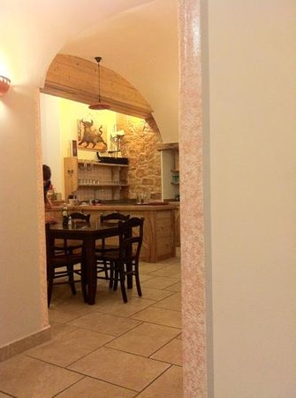

About Trattoria Bar Christian.
Trattoria Bar Christian is a restaurant in Rovereto, Italy. Find it at 17 Via Orefici, Rovereto, Italy.
Rovereto · Restaurant
Trattoria Bar Christian is a restaurant in Rovereto, Italy. Find it at 17 Via Orefici, Rovereto, Italy.
Visit details
Trattoria Bar Christian is a restaurant in Rovereto, Italy. Find it at 17 Via Orefici, Rovereto, Italy.
